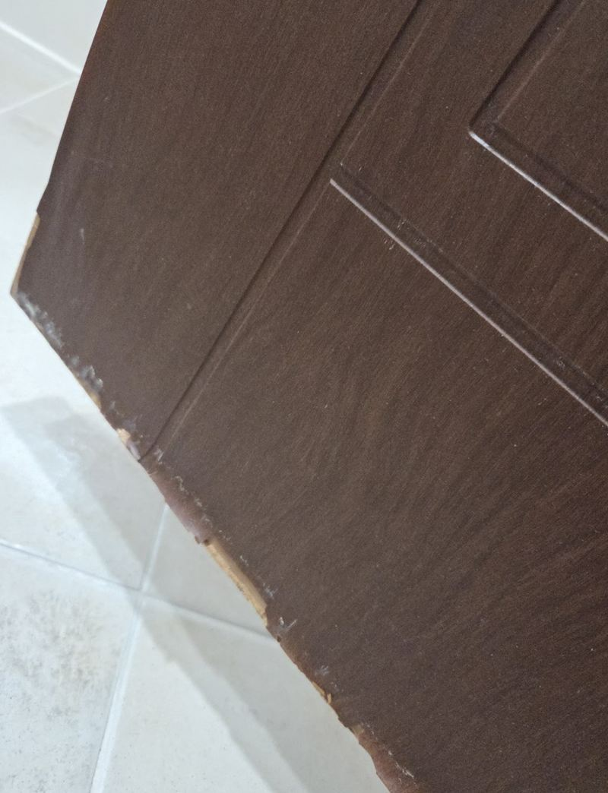
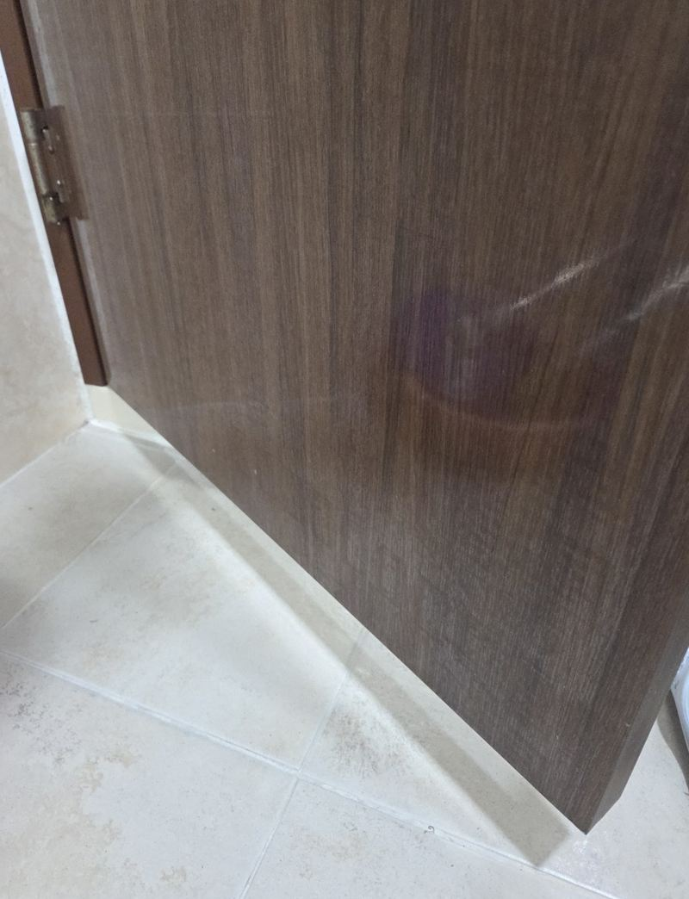
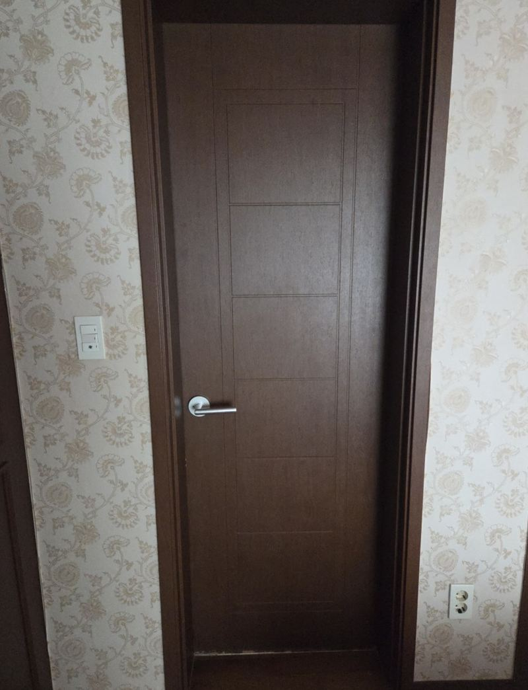
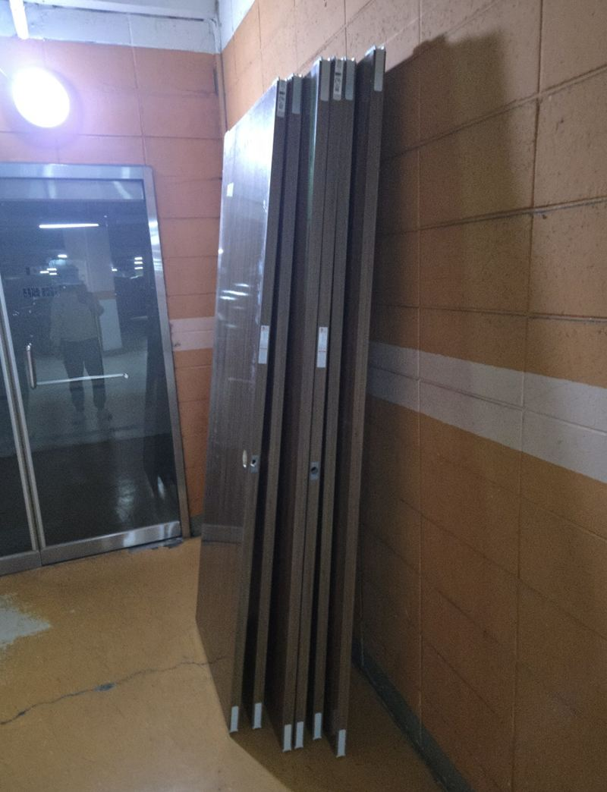
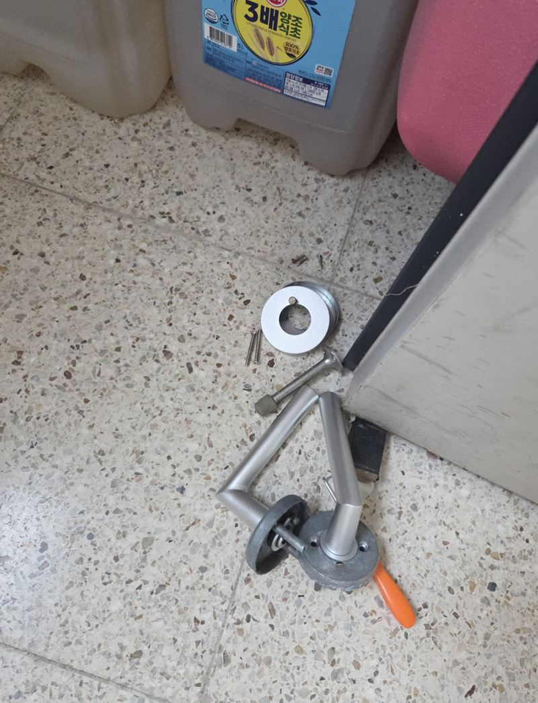
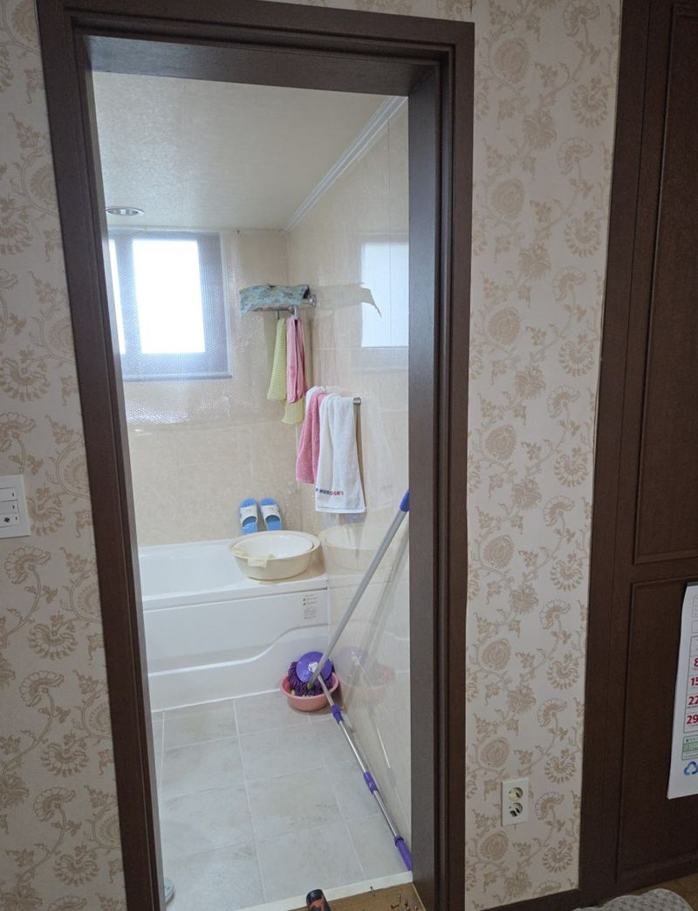
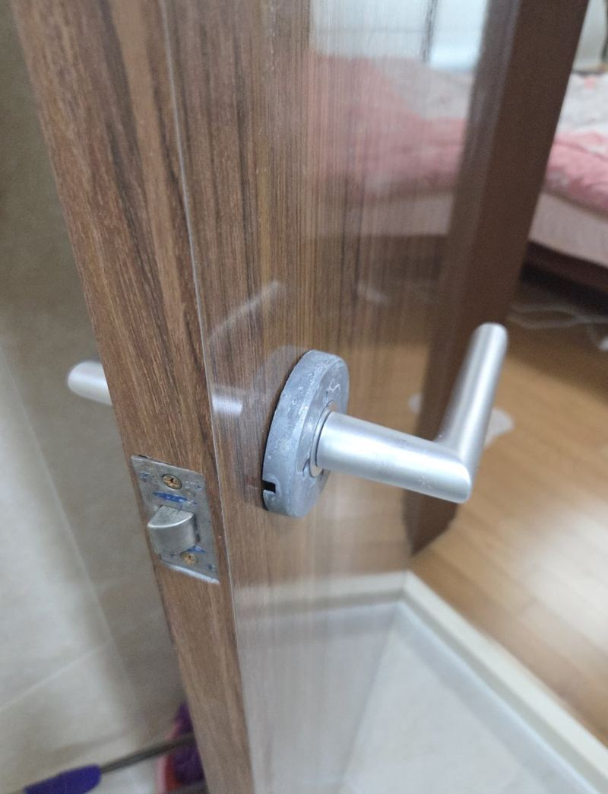

화성 MDF 욕실문 필름 벗겨짐, 문 교체 비용

 교체 전교체 후
교체 전교체 후← 밀어서 전후 비교 →
욕실문 아래쪽 필름이 들뜨더니 결국 벗겨지고, 그 틈으로 물이 스며 문이 뒤틀리기 시작한 집이었어요. 둘러보니 다른 방문들도 비슷하게 필름이 일어나 있었어요. 하나씩 따로 하기보다 욕실문을 포함해 방문 6개를 한 번에 맞춰 바꿨어요.
| 현장 | 화성 봉담읍 아파트 |
|---|---|
| 증상 | MDF 문 필름 들뜸·벗겨짐, 욕실문 속 목재 젖음, 일부 뒤틀림 |
| 규모 | 욕실문 포함 방문 6개 동시 교체 |
| 한 일 | 상태 점검 → 실측 → 샘플북 색 선택 → 제작 → 기존 문 철거 → 설치 |
시트지로 덮어도 될까?
필름만 들뜬 정도라면 시트지로 덮는 방법도 있어요. 하지만 욕실문처럼 틈으로 물이 들어가 MDF 속이 부풀었다면 겉을 덮어도 안에서 계속 썩고 뒤틀려요. 이 집 욕실문과 몇몇 방문은 이미 휘기 시작해서, 보수보다 교체가 맞는 상태였어요.


실측과 색 고르기
문은 몇 밀리만 어긋나도 닫힐 때 걸리거나 바닥에 끌려요. 문마다 높이와 폭을 따로 재고, 샘플북을 가져가 몰딩과 벽지 색에 어울리는 문 색을 고객님과 같이 골랐어요. 여러 개를 한 번에 바꾸니 집 안 문 색이 통일돼서 더 깔끔해졌어요.


새 문짝 설치
기존 문을 경첩부터 풀어 조심스럽게 떼고 문틀 상태를 확인했어요. 만들어 온 새 문짝을 하나씩 걸어 수직과 틈을 맞추고, 손잡이를 달아 여닫기를 확인했어요. 떼어 낸 문은 수거해 정리했어요.


여러 개를 한 번에 바꾸면
- 색이 통일돼요하나씩 바꾸면 시기마다 색과 무늬가 달라질 수 있어요.
- 방문 횟수가 줄어요실측과 설치를 한 번에 해서 일정 잡기가 편해요.
- 상한 문을 놓치지 않아요겉은 멀쩡해 보여도 아래쪽이 젖은 문을 같이 발견할 수 있어요.
이런 문이면 교체를 생각해 보세요
- 문 아래쪽이 부풀어 바닥에 끌려요MDF가 물을 먹고 부푼 상태예요. 대패로 깎아도 계속 부풀어요.
- 필름 들뜬 자리가 점점 넓어져요틈으로 습기가 계속 들어가고 있다는 뜻이에요. 욕실문이라면 특히 빨리 번져요.
- 문이 잘 안 닫히고 틈이 벌어져요문짝이 뒤틀렸을 가능성이 커요. 경첩 조정으로 안 잡히면 교체가 나아요.
- 집 안 문 색이 제각각이에요여러 개를 한 번에 바꾸면 색을 통일할 수 있어요.
방문 교체 질문
욕실문만 다른 재질로 할 수 있나요?
물에 강한 욕실용 문으로 따로 할 수 있어요. 색은 다른 방문과 맞춰 골라요.
문틀은 그대로 쓰나요?
문틀이 멀쩡하면 문짝만 바꿔요. 문틀 필름도 들떴다면 함께 정리하는 방법을 안내해요.
문 제작은 며칠 걸리나요?
수량과 사양에 따라 달라요. 실측할 때 설치 날짜를 함께 잡아요.
손잡이도 새것으로 바꾸나요?
원하시면 같이 바꿔요. 쓰던 손잡이가 멀쩡하면 옮겨 달 수도 있어요.
사는 동안 교체해도 되나요?
문 하나씩 떼고 달아서 생활하시면서도 진행할 수 있어요.
필름 들뜬 부분만 다시 붙일 수는 없나요?
막 들뜨기 시작한 정도면 접착으로 잡히기도 해요. 속이 부풀었다면 다시 들뜨기 쉬워서 교체를 권해요.
문 하나만 교체해도 되나요?
물론이에요. 다른 문과 색을 맞추려고 샘플을 가져가서 비교해 드려요.
욕실문이 왜 유독 빨리 상하나요?
샤워 후 습기와 바닥 물이 문 아래로 스며들어요. 환기를 자주 하고 문 아래 물기를 닦아 주면 오래가요.
다른 방문·욕실문 현장
문 전체 사진과 필름이 일어난 부분, 바꿀 문 개수를 알려주세요.
전화 상담 010-4517-9872